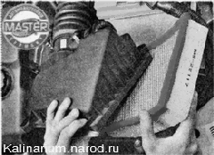

Воздушный фильтр - Снятие, установка и замена фильтрующего элемента
По рекомендации завода-изготовителя фильтрующий элемент воздушного фильтра заменяем после каждых 30 000 км пробега.
Последовательность выполнения
1. Подготавливаем автомобиль к выполнению ремонта
2. Крестовой отверткой отворачиваем четыре винта крепления крышки воздушного фильтра.

3. Приподнимаем крышку и извлекаем из крышки фильтрующий элемент.
4. Очищаем внутреннюю полость корпуса фильтра от пыли.
5. Вставляем новый фильтрующий элемент в корпус фильтра.
Гофры фильтрующего элемента должны располагаться вдоль стрелок, нанесенных на внутренней поверхности корпуса воздушного фильтра.
6. Устанавливаем крышку на место.
7. Заворачиваем винты крепления крышки.
Совет
Чтобы крышка корпуса герметично обжала уплотнение фильтрующего элемента, винты следует затягивать равномерно, по пол-оборота, в несколько приемов.
Воздушный фильтр - снятие и установка
Операция может потребоваться при ремонте двигателя и его систем. Поэтому во многих случаях целесообразно снять фильтр вместе с датчиком массового расхода воздуха и даже со шлангом подвода воздуха к дроссельной заслонке.
Снятие
1. Подготавливаем автомобиль к выполнению работы.
2. Ослабляем затяжку хомута 1 крепления воздуховода к патрубку датчика массового расхода воздуха. Отсоединяем колодку жгута проводов от датчика массового расхода воздуха 2.

3. Отсоединяем клапан продувки адсорбера от корпуса воздушного фильтра
4. Выводим резиновые стойки из зацепления с корпусом воздушного фильтра.

5. Отсоединяем воздухозаборник от патрубка воздушного фильтра и извлекаем корпус воздушного фильтра вместе с датчиком массового расхода воздуха из моторного отсека.

6. При необходимости снятия воздухозаборника воздушного фильтра снимаем декоративную накладку двигателя.
7. Торцовым ключом на 10 мм с трещоткой отворачиваем гайку крепления воздухозаборника к радиатору системы охлаждения.

8. Извлекаем воздухозаборник вместе с соединительным шлангом из проема между радиатором и впускным модулем двигателя.

Установка
Устанавливаем воздушный фильтр в обратной последовательности.